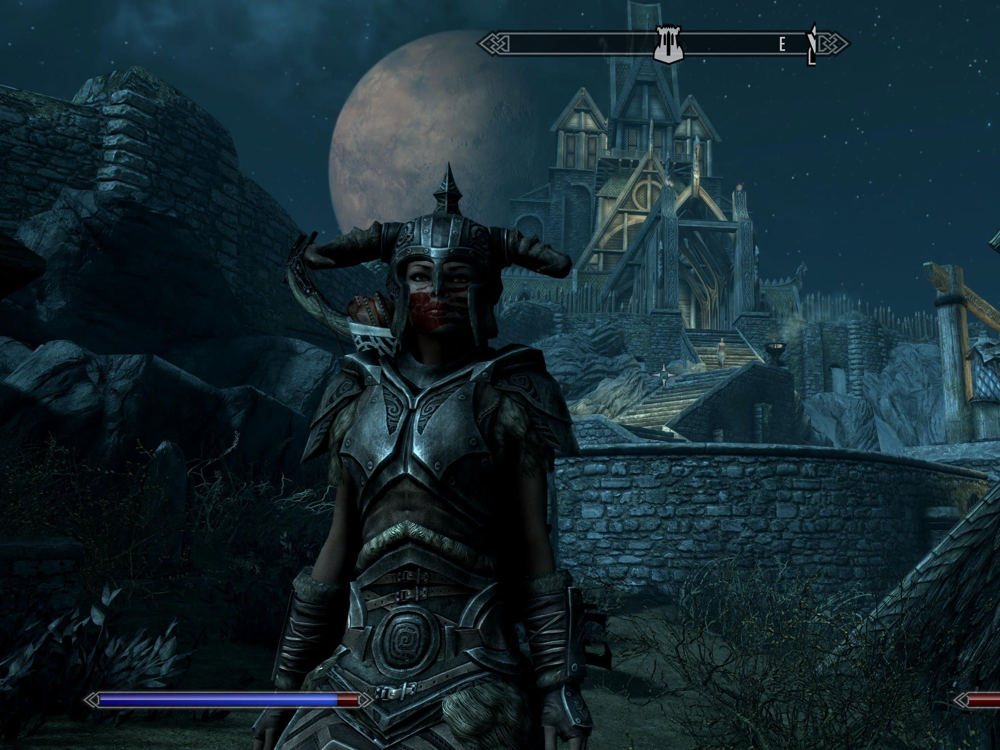

My favourite hobbies are playing video games, going for walks while listening to music, and spending time with my family. I enjoy playing video games because they give me a chance to turn my brain off and focus on one thing at a time. One game I've been playing a lot recently is Elden Ring, although I'm not very good at it and sometimes need my son's help with some of the bosses. My favourite game, however, is Skyrim. I enjoy getting lost in the world of the game and exploring everything it has to offer.
Another way I'm able to turn off my brain is through music and walks. I always feel better after putting on some of my favourite tunes and getting outside for some fresh air and sunshine. Going for walks gives me a chance to clear my head and take a break from my mind.
When I'm not playing video games or going for walks, I also enjoy spending time with my family. I haven't spent as much time with my family over the past few years as I would have liked. After losing my mother, I was filled with so much regret about the time I didn't spend with her and the moments I wish I could have had with her. Losing her made me realize how important it is to make time for the people we love while we have the chance. Since then, I've been making more of an effort to visit, talk, and spend time with my family. I want to make more memories with them and appreciate the time we have together.
“Happiness is when what you think, what you say, and what you do are in harmony.”-Mahatma Gandhi